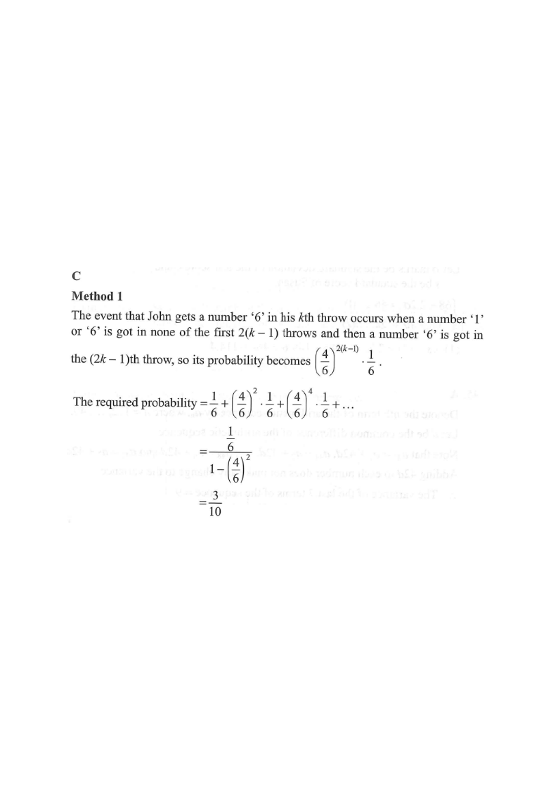

Step 1: Each turn: face 1 or 6 ends the game (prob 2/6); otherwise the game continues (prob 4/6).
John's throwMary's throwGet a "6"Get a "1"Neither (4/6)
Tree diagram of the game (vertical = time order)
HKDSE 2018 Paper 2 — Q43
John and Mary take turns to throw a fair die until one of them gets a number "1" or "6". John throws the die first. Find the probability that John gets a number "6".
A. \(\dfrac{1}{2}\)
B. \(\dfrac{1}{6}\)
C. \(\dfrac{3}{10}\)
D. \(\dfrac{7}{10}\)

Figure (original exam diagram)
1
Step 1 — Read off the per-throw probabilities
A fair die has 6 faces. Getting a "1" or a "6" ends the game:
Within the "end" outcomes, "6" has probability \(\frac{1}{6}\) and "1" has probability \(\frac{1}{6}\).
Hint: the game only ever "survives" a throw when the face is 2, 3, 4 or 5 — probability \(\frac46\).
Probability of an Event\(P(E)=\dfrac{\text{number of favourable outcomes}}{\text{total number of outcomes}}\)A fair die gives \(P(\text{game ends})=\dfrac{2}{6}=\dfrac{1}{3}\) and \(P(\text{game continues})=\dfrac{4}{6}=\dfrac{2}{3}\).
2
Step 2 — Describe how John wins on his \(k\)-th throw
John throws on turns \(1,3,5,\dots\), i.e. on the \((2k-1)\)-th throw overall. For John to get his "6" on his \(k\)-th throw:
\[ \underbrace{\frac{4}{6}\cdot\frac{4}{6}}_{\text{first }2(k-1)\text{ throws survive}} \times \underbrace{\frac{1}{6}}_{\text{John's }k\text{-th throw is a 6}} = \left(\frac{4}{6}\right)^{2(k-1)}\frac{1}{6}. \]
Hint: the \(2(k-1)\) earlier throws are John's \(k-1\) and Mary's \(k-1\); each must avoid 1 and 6.
Multiplication Principle for Independent Throws\(P(A\cap B)=P(A)\,P(B)\)The \(2(k-1)\) earlier throws must all avoid 1 and 6, so their probability is \(\left(\dfrac{4}{6}\right)^{2(k-1)}\).
3
Step 3 — Sum over all \(k\) (infinite geometric series)
Sum of an Infinite Geometric Series\(S_{\infty}=\dfrac{a}{1-r}\quad(-1With \(a=\dfrac{1}{6}\) and \(r=\dfrac{4}{9}\), the total probability is \(\dfrac{1/6}{1-4/9}=\dfrac{3}{10}\).
5
Step 5 — Check with a symmetry argument
Let \(p\) be the probability that the first thrower wins. Then:
\[ p = \frac{1}{6} + \frac{4}{6}\cdot\frac{2}{3}\,p \;\Rightarrow\; p = \frac{1}{6}+\frac{4}{9}p. \]
Hint: after both players survive one round (prob \(\frac46\cdot\frac23=\frac49\)), the position repeats with John to throw again.
Answer: C — \(\dfrac{3}{10}\)
PRACTICESimilar question — try it yourself
Question. John and Mary take turns throwing a fair die, with John throwing first. The game ends as soon as the die shows \(1\), \(2\) or \(3\); John wins if the die shows \(1\), and Mary wins if it shows \(2\) or \(3\). Find the probability that John wins. A. \(\dfrac{2}{9}\) B. \(\dfrac{1}{3}\) C. \(\dfrac{3}{10}\) D. \(\dfrac{2}{7}\)
Show the worked solution
Step 1. The game continues only when the die shows \(4\), \(5\) or \(6\), so \(P(\text{continues})=\dfrac{3}{6}=\dfrac{1}{2}\) and \(P(\text{John wins a throw})=\dfrac{1}{6}\).
Step 2. John wins on his \(k\)-th throw with probability \(\left(\dfrac{1}{2}\right)^{2(k-1)}\times\dfrac{1}{6}\).
Step 3. Summing over all \(k\): \(P=\dfrac{1}{6}+\dfrac{1}{6}\left(\dfrac{1}{4}\right)+\dfrac{1}{6}\left(\dfrac{1}{4}\right)^{2}+\cdots\), a geometric series with \(a=\dfrac{1}{6}\) and \(r=\dfrac{1}{4}\).
Step 4. \(P=\dfrac{1/6}{1-1/4}=\dfrac{1}{6}\times\dfrac{4}{3}=\dfrac{2}{9}\), i.e. option A.